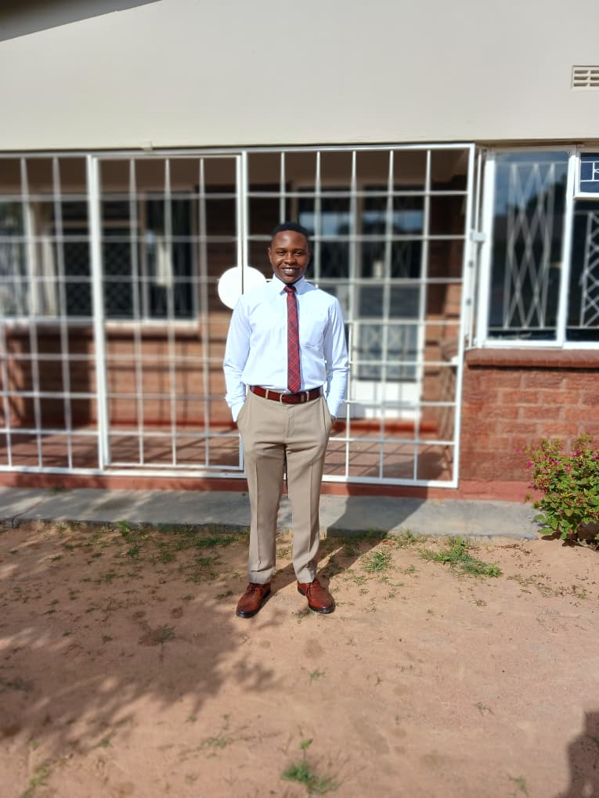

Robert Farai Godi| WDD 130
Hello my name is Robert Farai Godi. I come from Zimbabwe and I am 21 years old, I love playing volleyball and watching anime! I am studying this course in order to gain skills in web development so that i will be able to use those skills in my future career as a software developer. I am looking forward to learning all this course has to offer and I am so very excited to begin this course.